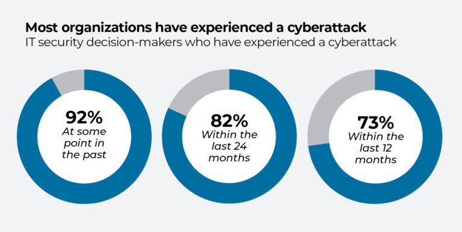

Keeping the Edge
With AI implementation taking precedence in cybersecurity, how can cybersecurity professionals keep their edge? Many people worry about AI taking jobs, and this field is no different. Cybersecurity professionals must learn to look at AI as a tool and further expand their skill set to keep up.
Cybersecurity Threats - Tanium
Keeping up with AI
Cybersecurity professionals can focus on specific things to maintain their edge.
Continuous Learning: Keep up with trends, tools, and new technology. While this goes across the board in the field of technology, it's imperative here. Make learning a priority inside and outside of your professional life.
Specialize: Cybersecurity is a massive field with specializations across the board. By specializing in a specific area you can increase your value.
Collaboration: Invest your time learning and working with AI developers and data scientists. Learn the fields of AI and it's future. The more knowledge one can obtain the better.
Cybersecurity Professionals
AI and it's implementation across industries isn't going away anytime soon. Being adaptable and open to change will keep the edge that employers want to see. Change is inevitable and we must be prepared at all times.